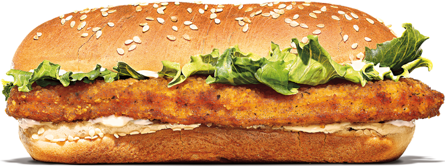

The Long Chicken sandwich is a beloved menu item at Burger King, known for its simple yet satisfying
combination of flavors and textures. The heart of the sandwich is, of course, the long, rectangular chicken
fillet. This fillet is breaded and fried to a golden crisp, offering a delightful crunch with each bite.
The sandwich is then layered with fresh, crisp lettuce and juicy tomato slices, adding a refreshing element
that balances the richness of the chicken and mayonnaise. The final touch is a generous spread of creamy
mayonnaise, which binds all the ingredients together and provides a smooth, tangy flavor. All of this is
nestled within a sesame seed bun, adding a subtle nutty flavor and a pleasing texture.
Beyond the classic version, Burger King has also introduced variations to cater to different tastes and
dietary preferences. The Veggie Long Chicken offers a plant-based alternative, allowing vegetarians and
those seeking a meat-free option to enjoy the Long Chicken experience. The Veggie Long Chicken is made with
a plant-based patty and vegan mayonnaise, ensuring a delicious and inclusive option.
The Long Chicken sandwich is a testament to the power of simplicity. It's a straightforward, satisfying meal
that has become a staple on the Burger King menu.